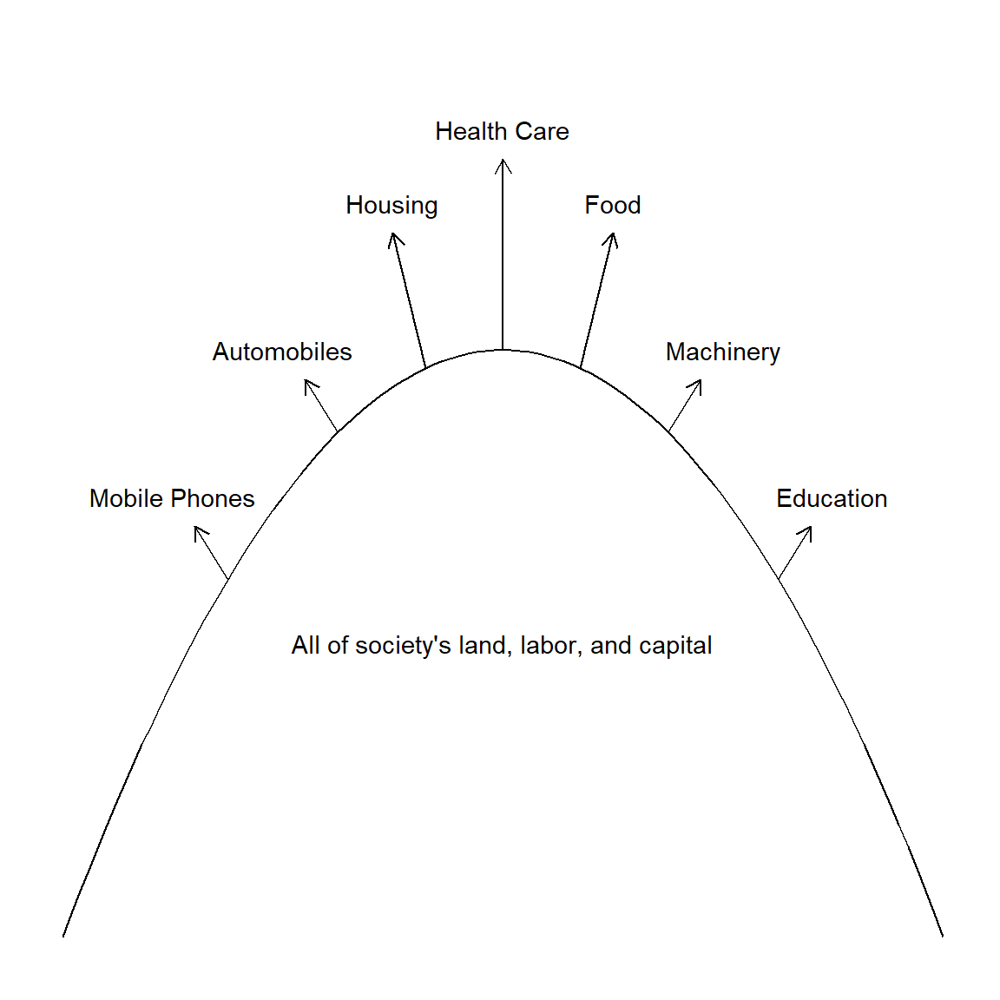
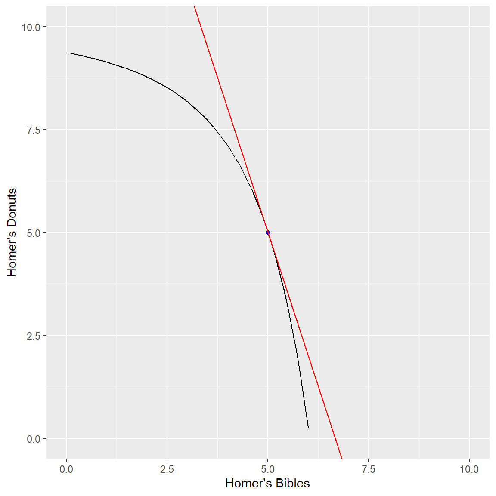

General Equilibrium
Pure Exchange: each consumer has magical endowments of goods
to exchange.
Production: individuals must produce goods from their endowed
inputs.
Exchange with Production: goods must be produce from inputs, and then
exchanged.
The Big Picture

Edgeworth Box
Homer and Flanders consume two goods, donuts and bibles. Each is endowed with 5 dozen donuts and 5 bibles. However, Homer and Flanders have different preferences. Homer prefers donuts to bibles, while Flanders prefers bibles to donuts so that we can their preferences can be described by the following utility functions:
\[U^{H}(Q_b, Q_d) = Q_b^{0.05}Q_d^{0.95}\]
\[U^{F}(Q_b, Q_d) = Q_b^{0.75}Q_d^{0.25}\]
Tradeoffs without exchange
Run the following code that illustrates Homer and Flanders’ endowment
indifference curves on separate graphs and adds a line tangent to each
indifference curve that represents each consumer’s marginal rate of
substition of donuts to bibles without exchange.
Note that for the Cobb-Douglas function, the MRS is equal to the ratio
of the budget shares times the ratio of the consumption levels at each
point, \(MRS =
\frac{\alpha}{1-\alpha}\frac{y}{x}\) where \(\alpha\) is the budget share of the “x”
good.
library(ggplot2)
a_H = 0.05
a_F = 0.75
u_H <- function(Q_b, Q_d) {
Q_b^a_H * Q_d^(1-a_H)
}
u_F <- function(Q_b, Q_d) {
Q_b^a_F * Q_d^(1-a_F)
}
e_H = c(5, 5)
e_F = c(5, 5)
ic_H <- function(Q_b) {
(u_H(e_H[1], e_H[2])/Q_b^a_H)^(1/(1-a_H))
}
ic_F <- function(Q_b) {
(u_F(e_F[1], e_F[2])/Q_b^a_F)^(1/(1-a_F))
}
g_H <- ggplot() +
geom_function(fun = ic_H) +
geom_point(aes(x = e_H[1], y = e_H[2]), color = "blue") +
geom_abline(
slope = -a_H/(1-a_H),
intercept = 5 + a_H/(1-a_H) * 5,
color = "red"
) +
lims(x = c(0, 10), y = c(0, 10)) +
labs(x = "Beer", y = "Donuts")
g_F <- ggplot() +
geom_function(fun = ic_F) +
geom_point(aes(x = e_F[1], y = e_F[2]), color = "blue") +
geom_abline(
slope = -a_F/(1-a_F),
intercept = 5 + a_F/(1-a_F) * 5,
color = "red"
) +
lims(x = c(0, 10), y = c(0, 10)) +
labs(x = "Bibles", y = "Donuts")
g_H; g_Flibrary(ggplot2)
a_H = 0.05
a_F = 0.75
u_H <- function(Q_b, Q_d) {
Q_b^a_H * Q_d^(1-a_H)
}
u_F <- function(Q_b, Q_d) {
Q_b^a_F * Q_d^(1-a_F)
}
e_H = c(5, 5)
e_F = c(5, 5)
ic_H <- function(Q_b) {
(u_H(e_H[1], e_H[2])/Q_b^a_H)^(1/(1-a_H))
}
ic_F <- function(Q_b) {
(u_F(e_F[1], e_F[2])/Q_b^a_F)^(1/(1-a_F))
}
g_H <- ggplot() +
geom_function(fun = ic_H) +
geom_point(aes(x = e_H[1], y = e_H[2]), color = "blue") +
geom_abline(
slope = -a_H/(1-a_H),
intercept = 5 + a_H/(1-a_H) * 5,
color = "red"
) +
lims(x = c(0, 10), y = c(0, 10)) +
labs(x = "Beer", y = "Donuts")
g_F <- ggplot() +
geom_function(fun = ic_F) +
geom_point(aes(x = e_F[1], y = e_F[2]), color = "blue") +
geom_abline(
slope = -a_F/(1-a_F),
intercept = 5 + a_F/(1-a_F) * 5,
color = "red"
) +
lims(x = c(0, 10), y = c(0, 10)) +
labs(x = "Bibles", y = "Donuts")
g_H; g_FCombining the Indifference Curves
Now, we will combine the two indifference curves into one graph. To do this, we need to define a new function for Flanders’ utility in terms of Homer’s consumption.
Define a new function for Flanders’ utility in terms of Homer’s consumption, noting that Flanders’ consumption equals the total combined endowment minus Homer’s consumption. Then, find an expression for Flanders’ flipped-over indifference curve through the endowment point in terms of Homer’s beer consumption, noting that this is equal to the total endowment of donuts minus Flanders’ indifference curve expressed in terms of Homer’s consumption through the endowment. In other words,
\[V_{F}(Q_b^H, Q_d^H) = (E_b - Q_b^H)^{0.75}(E_d-Q_d^H)^{0.25}\] where \(E_b\) and \(E_d\) are the total endowments of bibles and donuts, respectively.
The expression for Flanders’ flipped indifference curve is then:
\[Q_d^H = E_d - \Bigg( \frac{V_{N}(E_b^H, E_d^H)}{(E_b-Q_b^H)^{0.75}}\Bigg)^{1/0.25}\]
Plotting the Indifference Curves
Run the following code to:
1. Plot Flanders’ flipped indifference curve and MRS line.
2. Add Homer’s endowment indifference curve and MRS line to that
graph.
e <- e_H + e_F
v_F <- function(Q_b, Q_d) {
u_F(e[1] - Q_b, e[2] - Q_d)
}
ic_F_inv <- function(Q_b) {
e[2] - (v_F(e_H[1], e_H[2])/(e[1]-Q_b)^a_F)^(1/(1-a_F))
}
g_F_inv <- ggplot() +
geom_function(fun = ic_F_inv) +
geom_point(aes(x = e_H[1], y = e_H[2]), color = "blue") +
geom_abline(
slope = -a_F/(1-a_F),
intercept = (e[2] - e_F[2]) + a_F/(1-a_F) * (e[1] - e_F[1]),
color = "red"
) +
lims(x = c(0, 10), y = c(0, 10)) +
labs(x = "Homer's Bibles", y = "Homer's Donuts")
g_F_inv; 
box <- g_F_inv +
geom_function(fun = ic_H) +
geom_abline(
slope = -a_H/(1-a_H),
intercept = 5 + a_H/(1-a_H) * 5,
color = "red"
)
boxe <- e_H + e_F
v_F <- function(Q_b, Q_d) {
u_F(e[1] - Q_b, e[2] - Q_d)
}
ic_F_inv <- function(Q_b) {
e[2] - (v_F(e_H[1], e_H[2])/(e[1]-Q_b)^a_F)^(1/(1-a_F))
}
g_F_inv <- ggplot() +
geom_function(fun = ic_F_inv) +
geom_point(aes(x = e_H[1], y = e_H[2]), color = "blue") +
geom_abline(
slope = -a_F/(1-a_F),
intercept = (e[2] - e_F[2]) + a_F/(1-a_F) * (e[1] - e_F[1]),
color = "red"
) +
lims(x = c(0, 10), y = c(0, 10)) +
labs(x = "Homer's Bibles", y = "Homer's Donuts")
g_F_inv;
box <- g_F_inv +
geom_function(fun = ic_H) +
geom_abline(
slope = -a_H/(1-a_H),
intercept = 5 + a_H/(1-a_H) * 5,
color = "red"
)
boxProperties of the box
- The sides of the box give the total amounts of the two goods
available.
Total bibles = \(E_b = E_b^H + E_b^N = 10\) Total boxes of donuts = \(E_d = E_d^H + E_d^N = 10\)
- The initial endowment is a single point that can be read from A or
B’s point of view.
The initial endowment is (5,5) for Homer and (5,5) for Flanders.
- Market prices (will) establish a budget constraint that is common to
both consumers.
- It is the price ratio, p_b/p_d, that matters, not the individual
prices levels. Because of this (known as Walras’ Law), we can set p_d =
1, and call it the “numeraire.”
- Net demands for both goods by both consumers can be read from the
box with careful attention. Remember to read Flanders’ consumption from
the top right corner.
- The Edgeworth Box has enough information for you to figure out how prices will change and where the equilibrium solution lies.
Solving the Box
Solving the Edgeworth Box involves a constrained vector optimization problem That we could write as:
\[\max_{Q,p} \Bigg\{ \begin{pmatrix}U_H(Q_{b,H}, Q_{d,H}) \\ U_F(Q_{b,F}, Q_{d,F}) \end{pmatrix} = \begin{pmatrix} Q_{b,H}^{\alpha_H} Q_{d,H}^{1-\alpha_H} \\ Q_{b,F}^{\alpha_F} Q_{d,F}^{1-\alpha_F} \end{pmatrix} \Bigg\} s.t.\] \[\begin{pmatrix}p_bQ_{b,H} + Q_{d,H} \\ p_bQ_{b,F} + Q_{d,F}\end{pmatrix} \le \begin{pmatrix}p_bE_{b,H} + E_{d,H} \\ p_bE_{b,F} + E_{d,F}\end{pmatrix}\] \[\begin{pmatrix} Q_{b,H} + Q_{b,F} \\ Q_{d,H} + Q_{d,F} \end{pmatrix} \le \begin{pmatrix} E_{b,H} + E_{b,F} \\ E_{d,H} + E_{d,F} \end{pmatrix}\]
One way to simplify this problem is to recognize that with prices, only relative prices matter. This means that we can set one of the prices (\(p_d\)) to 1.
Unfortunately, I do not know of a way to jointly optimize a vector of functions in R and this link makes me think that it is probably too complicated to demonstrate for new useRs (or even for me!).
Instead, I will solve the problem using the first-order conditions from Flanders’ optimization problem and use it as a constraint to optimize Homer’s problem. Then, we will graph the equilibrium.
First-Order Conditions
The first-order conditions for Homer’s optimization problem are: \[\frac{\partial U_H}{\partial Q_{b,H}} \le \lambda_H p_b\] \[\frac{\partial U_H}{\partial Q_{d,H}} \le \lambda_H\] \[p_bQ_{b,H} + Q_{d,H} \le p_bE_{b,H} + E_{d,H}\]
where \(\lambda_H\) is the Lagrange multiplier from Homer’s optimization problem. Using the Homer’s utility function and combining, these first-order conditions become:
\[\frac{\alpha_H}{(1-\alpha_H)} \cdot \frac{Q_{d,H}}{Q_{b,H}} = p_b\] \[p_bQ_{b,H} + Q_{d,H} = p_bE_{b,H} + E_{d,H}\]
Letting \(a = \frac{\alpha_H}{(1-\alpha_H)}\), we can rewrite the first equation above as: \[a \cdot \frac{Q_{d,H}}{Q_{b,H}} = p_b\]
The corresponding first-order conditions for Flanders’ optimization
problem are:
\[\frac{\partial U_F}{\partial Q_{b,F}}
\le \lambda_F p_b\] \[\frac{\partial
U_F}{\partial Q_{d,F}} \le \lambda_F\] \[p_bQ_{b,F} + Q_{d,F} \le p_bE_{b,F} +
E_{d,F}\]
Substituting and combining, these become:
\[\frac{\alpha_F}{(1-\alpha_F)} \cdot \frac{Q_{d,F}}{Q_{b,F}} = p_b\]
\[p_bQ_{b,F} + Q_{d,F} = p_bE_{b,F} + E_{d,F}\]
Letting \(b = \frac{\alpha_F}{(1-\alpha_F)}\), we can rewrite the first equation above as: \[b \cdot \frac{Q_{d,F}}{Q_{b,F}} = p_b\]
Solving
Solving these equations involves some tricky algebra, and making it
work in R might be even trickier than just doing it by
hand. To get the solution, I first solved the budget constraints from
the first-order conditions for \(Q_{d,H} =
f(Q_{b,H}, p_b)\) and \(Q_{d,F} =
f(Q_{b,F}, p_b)\): \[Q_{d,H} =
p_bE_{b,H} + E_{d,H} - p_bQ_{b,H}\] \[Q_{d,F} = p_bE_{b,F} + E_{d,F} -
p_bQ_{b,F}\]
Then, I substituted these into the MRS conditions for both consumers. This gives us two equations in two unknowns (\(Q_{b,H}\) and \(p_b\)). \[a \cdot \frac{p_bE_{b,H} + E_{d,H} - p_bQ_{b,H}}{Q_{b,H}} = p_b\] \[b \cdot \frac{p_bE_{b,F} + E_{d,F} - p_bQ_{b,F}}{Q_{b,F}} = p_b\] or, equivalently: \[Q_{b,H} = \frac{a}{1+a} \cdot \Big(E_{b,H} + \frac{E_{d,H}}{p_b}\Big)\] \[Q_{b,F} = E_b - Q_{b,H} = \frac{b}{1+b} \cdot \Big(E_{b,F} + \frac{E_{d,F}}{p_b}\Big)\]
Combining the last two equations gives us:
\[Q_{b,H} = \frac{a}{1+a} \cdot \Big(E_{b,H} + \frac{E_{d,H}}{p_b}\Big) = E_b - \frac{b}{1+b} \cdot \Big(E_{b,F} + \frac{E_{d,F}}{p_b}\Big)\]
which we can solve for \(p_b\):
\[p_b = \frac{(1+b)E_{d,H} + (1+a) E_{d,F}}{(1+b)E_{b,H} + (1+a)E_{b,F}}\] This allows us to insert the value of \(p_b\) into the bible-demand equations (\(Q_{b,H} = \frac{a}{1+a} \cdot \Big(E_{b,H} + \frac{E_{d,H}}{p_b}\Big)\) and \(Q_{b,F} = \frac{b}{1+b} \cdot \Big(E_{b,F} + \frac{E_{d,F}}{p_b}\Big)\)) and find the rest of the variables’ values. Run the following code to solve for Homer’s optimal consumption of bibles and donuts (and therefore Flanders’ too) and prices.
a <- a_H/(1-a_H)
b <- a_F/(1-a_F)
p_b_star <-
((1+b)*a*e_H[2] + (1+a)*b*e_F[2])/((1+a)*e_F[1] + (1+b)*e_H[1])
q_hb_star <- (a/(1+a))*(e_H[1] + e_H[2]/p_b_star)
q_fb_star <- (b/(1+b))*(e_F[1] + e_F[2]/p_b_star)
q_hd_star <- p_b_star*e_H[1] + e_H[2] - p_b_star*q_hb_star
q_fd_star <- p_b_star*e_F[1] + e_F[2] - p_b_star*q_fb_star
q_star <- cbind(c(q_hb_star, q_fb_star), c(q_hd_star, q_fd_star))
rownames(q_star) <- c("Homer", "Flanders")
colnames(q_star) <- c("Bibles", "Donuts")
q_star Bibles Donuts
Homer 0.625 7.916667
Flanders 9.375 2.083333library(ggplot2)
a_H = 0.05
a_F = 0.75
u_H <- function(Q_b, Q_d) {
Q_b^a_H * Q_d^(1-a_H)
}
u_F <- function(Q_b, Q_d) {
Q_b^a_F * Q_d^(1-a_F)
}
e_H = c(5, 5)
e_F = c(5, 5)
ic_H <- function(Q_b) {
(u_H(e_H[1], e_H[2])/Q_b^a_H)^(1/(1-a_H))
}
ic_F <- function(Q_b) {
(u_F(e_F[1], e_F[2])/Q_b^a_F)^(1/(1-a_F))
}
e <- e_H + e_F
v_F <- function(Q_b, Q_d) {
u_F(e[1] - Q_b, e[2] - Q_d)
}
ic_F_inv <- function(Q_b) {
e[2] - (v_F(e_H[1], e_H[2])/(e[1]-Q_b)^a_F)^(1/(1-a_F))
}
e1 <- e[1]
e2 <- e[2]
a <- a_H/(1-a_H)
b <- a_F/(1-a_F)
FOC <- function(x) {
Qb_H <- x[1]
Qd_H <- x[2]
Qb_F <- x[3]
Qd_F <- x[4]
p_b <- x[5]
# Homer's MRS Condition
MRS <-
a * Qd_H/Qb_H - b * Qd_F/Qb_F
# Homer's budget constraint
bc_H <- p_b*Qb_H + Qd_H - p_b*e_H[1] - e_H[2]
# Flanders' budget constraint
bc_F <- p_b*Qb_F + Qd_F - p_b*e_F[1] - e_F[2]
# Beer endowment constraint
endow_b <- Qb_H + Qb_F - e1
# Donut endowment constraint
endow_d <- Qd_H + Qd_F - e2
# Return the vector of equations
return(c(MRS, bc_H, bc_F, endow_b, endow_d))
}p_b_star <-
((1+b)*a*e_H[2] + (1+a)*b*e_F[2])/((1+a)*e_F[1] + (1+b)*e_H[1])
q_hb_star <- (a/(1+a))*(e_H[1] + e_H[2]/pb)
q_fb_star <- (b/(1+b))*(e_F[1] + e_F[2]/pb)
q_hd_star <- p_b_star*e_H[1] + e_H[2] - p_b_star*q_hb_star
q_fd_star <- p_b_star*e_F[1] + e_F[2] - p_b_star*q_fb_star
q_star <- cbind(c(q_hb_star, q_fb_star), c(q_hd_star, q_fd_star))
rownames(q_star) <- c("Homer", "Flanders")
colnames(q_star) <- c("Bibles", "Donuts")
q_star